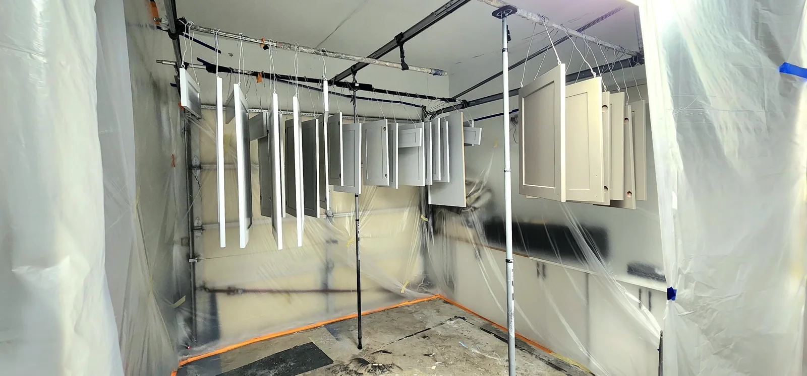

SEACOL project library
Craftsmanship in every detail.
Explore the work by service instead of scrolling through one oversized gallery. Every documented before-and-after pair includes an interactive slider, while the process gallery shows the preparation behind the finish.

Cabinet Refinishing
Kitchens, vanities and custom cabinetry.
Open gallery →
Interior Painting
Walls, ceilings, trim, wainscoting and full-room color transformations.
Open gallery →
Exterior & Wood
Decks, fences, exterior walls, doors and stain work.
Open gallery →
Custom Finishes
Drywall, fireplaces, built-ins and architectural features.
Open gallery →
Commercial Painting
Gyms, storage, doors and large commercial interiors.
Open gallery →
Preparation & Process
Masking, protection, repair, sanding, priming and application.
Open gallery →
Built-ins & Woodwork
Built-in shelving, media cabinetry, decorative woodwork and architectural trim, with finished details and work in progress.
Open gallery →
Repairs & Preparation
Drywall repairs, priming, surface preparation and careful masking before the finish coat. Real project photographs document each stage.
Open gallery →